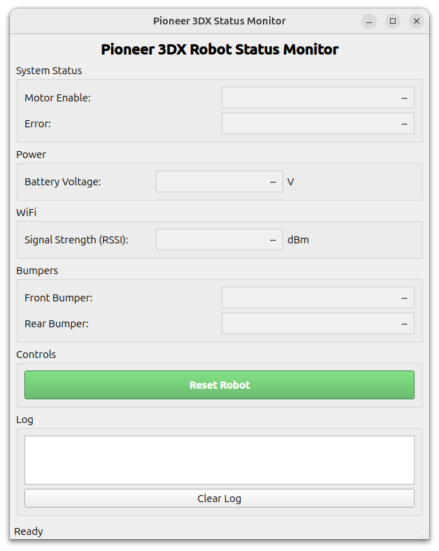
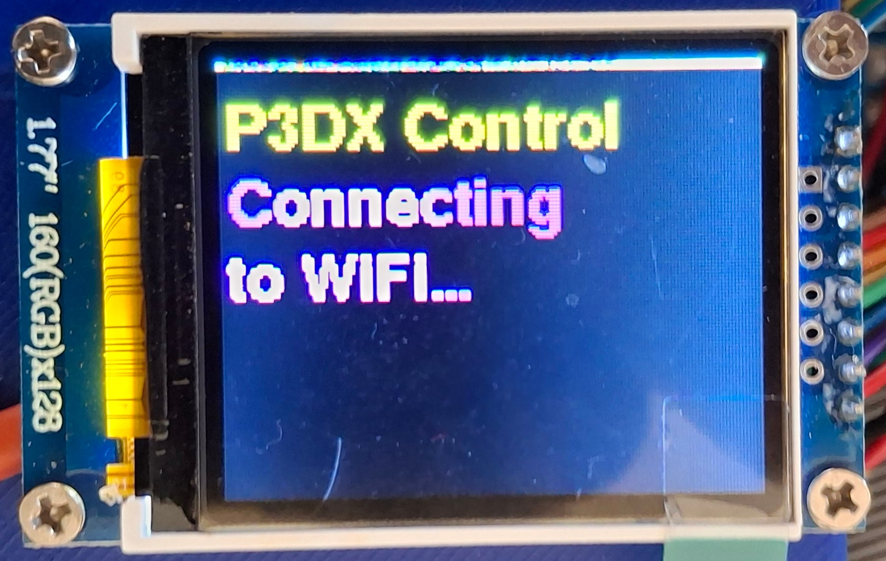
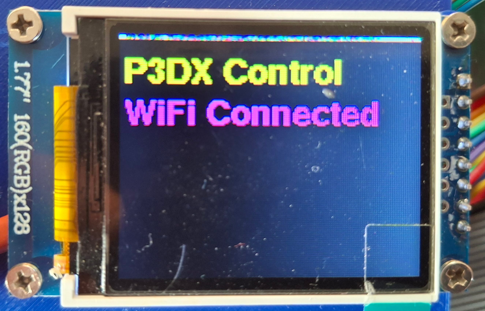
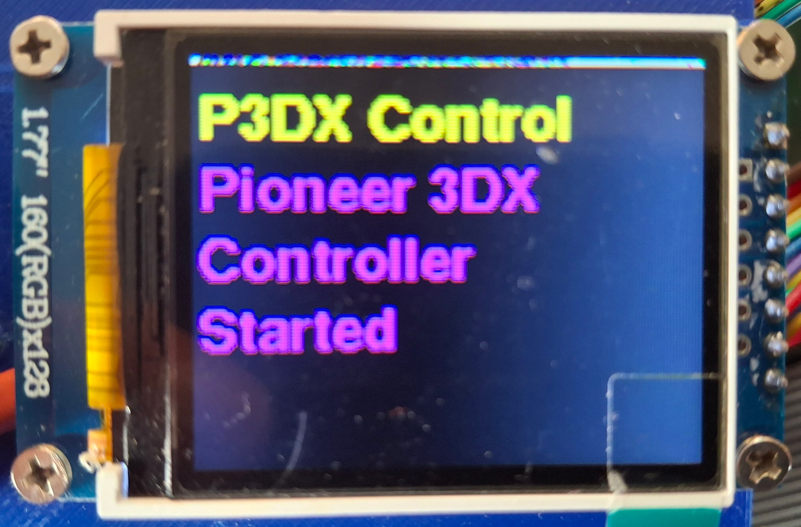
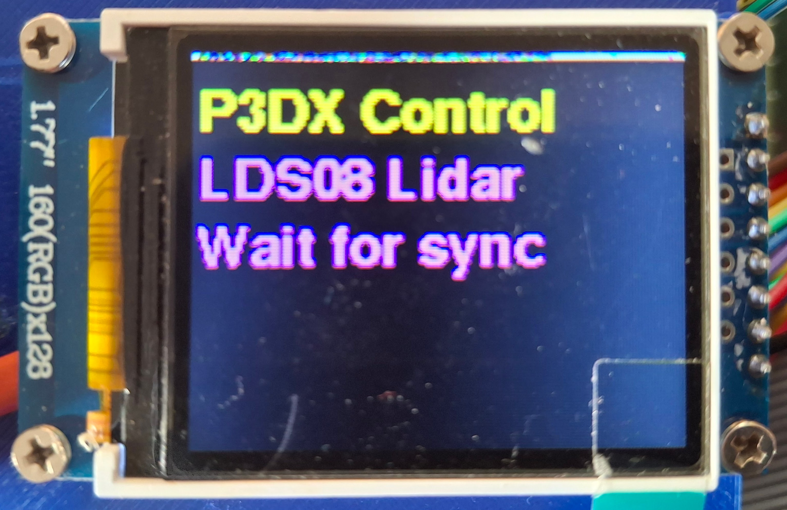
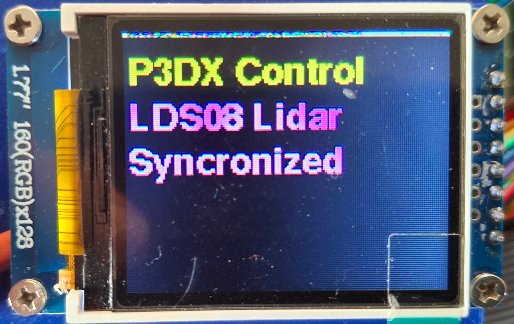
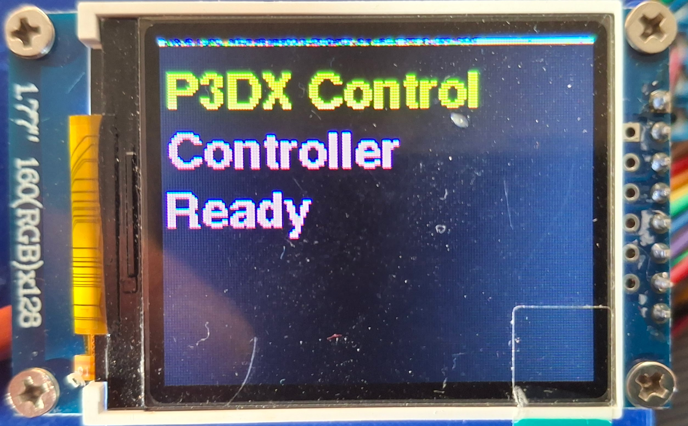
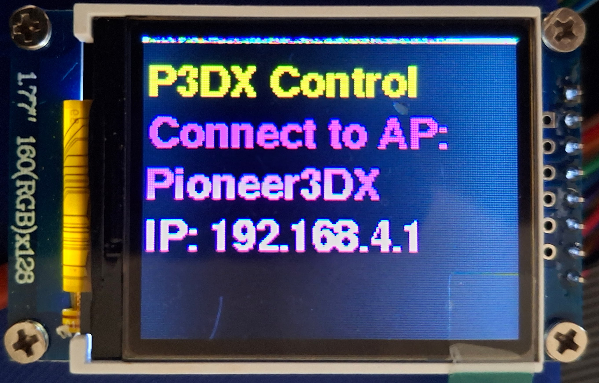
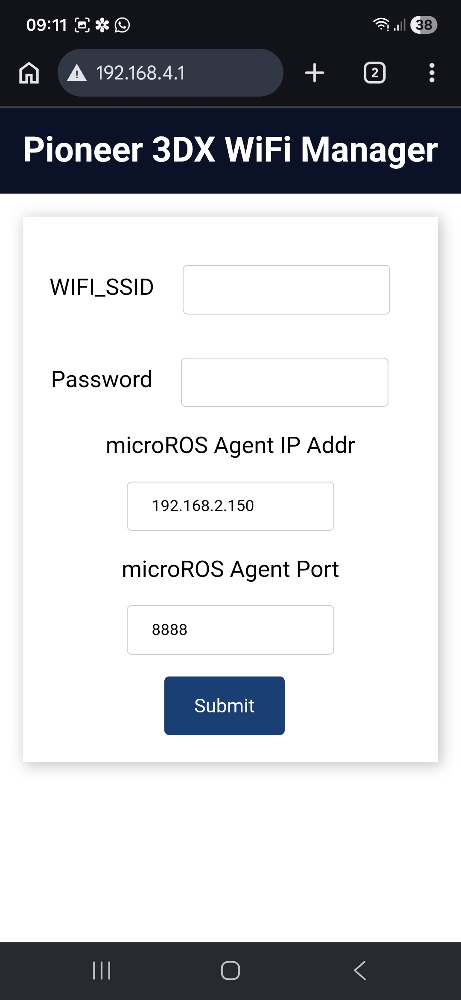
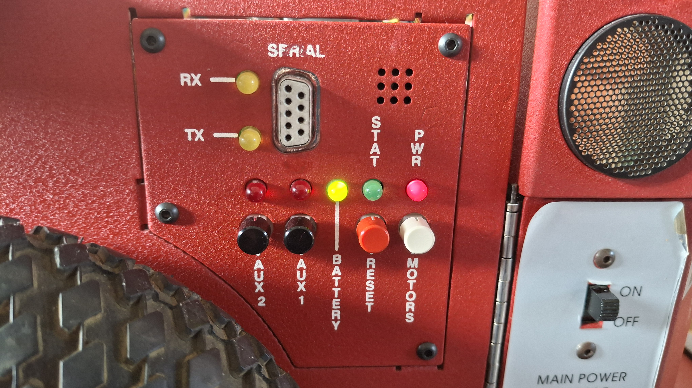

Fysieke robot setup
Starten van de micro-ROS agent en robot
Doel
Start de micro-ROS agent (serieel of UDP/TCP)
Laadt de robotbeschrijving (URDF)
Start de statusmonitor-module
Start de robot_localization EKF-module
Startargumenten
Argument |
Standaard |
Beschrijving |
|---|---|---|
|
|
Seriële poort basisstation |
|
|
micro-ROS baudrate |
|
|
micro-ROS transport (serieel/udp4/tcp4) |
|
|
micro-ROS UDP/TCP poortnummer |
|
|
Absoluut pad naar URDF-bestand robot |
|
|
EKF uitvoerodometrie-onderwerp |
|
|
Start de statusmonitor-module |
Gestarte modules/acties
micro_ros_agent: Start de micro-ROS agent voor communicatie met het robotbasisstation (serieel of netwerktransport).
robot_localization/ekf_node: Voorziet sensorfusie voor odometrie.
p3dx_status_monitor: Bewaakt robotstatus.
description.launch.py: Laadt de robotbeschrijving en publiceert de robotstatus.
Starten van de wifi micro-ROS agent en robot
ros2 launch p3dx_bringup bringup.launch.py
Starten van de USB micro-ROS agent en robot
ros2 launch p3dx_bringup bringup.launch.py base_serial_port:=/dev/ttyACM0 micro_ros_transport:=serial
Notitie
Kies 1 van bovenstaande commando’s afhankelijk van hoe de robots is geconfigureerd (wifi of USB micro-ROS agent).
Statusmonitor
De statusmonitor-module geeft realtime feedback over de robotstatus, waaronder batterijspanning, verbindingsstatus en foutmeldingen. Dit is cruciaal voor het veilig en effectief bedienen van de robot, vooral tijdens teleoperatie of autonome taken.

Startup sequence op de echte Pioneer 3DX robot

Deze sequentie wordt overgeslagen als de robot is geconfigreerd voor de USB micro-ROS agent.
Deze sequentie wordt overgeslagen als de robot is geconfigreerd voor de USB micro-ROS agent.

Tekst op display is afhankelijk van type Lidar
Tekst op display is afhankelijk van type Lidar
Wifi configuratie
Om de wifi micro-ROS agent te gebruiken, moet de robot verbonden zijn met hetzelfde netwerk als de computer waarop je werkt. Zorg ervoor dat de robot is geconfigureerd om verbinding te maken met het wifi-netwerk en dat je de juiste IP-adressen gebruikt in de micro-ROS agent en robotconfiguratie.
Als tijdens de startup-sequentie de robot niet kan verbinden met het wifi-netwerk, kan de wifi-configuratie geactiveerd worden. Op het display van de robot verschijnt de volgende melding:

Maak verbinding met het aangegeven Access Point (AP) en open een webbrowser om naar het aangegeven ip-adres te navigeren. Hier kun je de wifi-instellingen van de robot configureren, zoals het netwerk waarmee je wilt verbinden en het wachtwoord. Na het opslaan van de instellingen zal de robot herstarten en proberen verbinding te maken met het wifi-netwerk. Zodra de robot succesvol is verbonden, kun je de micro-ROS agent starten en de robot bedienen zoals beschreven in de documentatie.
Notitie
Er kan ook een wifi setup geforceerd worden door de robot op te starten terwijl de motors-knop ingedrukt wordt gehouden terwijl de main power wordt ingeschakeld. Dit kan handig zijn als de robot niet automatisch verbinding maakt met het netwerk of als je de wifi-instellingen wilt wijzigen.

Tip
Om het IP-adres van de computer waarop de micro-ROS agent draait te vinden, kun je het volgende commando gebruiken op een terminal op de robot:
ifconfig | grep broadcast
Let op: Dit commando werkt alleen goed als je met de computer verbonden ben met het wifi-netwerk van je router.
Dubbele computer configuratie
Soms is het handig om je systeem op te delen met 2 computers:
Computer 1: Deze computer bestuurt de hardware en draait de micro-ROS agent. Deze computer is verbonden met de robot via USB (serieel transport). Dit kan ook een raspberry pi of een andere embedded computer zijn die op de robot is gemonteerd. Op deze computer is bijvoorbeeld ook een camera aangesloten die beelden van de robot streamt.
Computer 2: Draait de ROS2 nodes voor teleoperatie, navigatie, enz. Deze computer is verbonden met Computer 1 via het netwerk (wifi of ethernet).
Computer 1 (Hardware Controller)
Op Computer 1 start je de micro-ROS agent met seriële communicatie en configureer je de robot zoals beschreven in de vorige sectie. Gebruik voor de bringup het volgende argument: status_monitor:=false om de statusmonitor-module uit te schakelen, deze zul je starten op Computer 2.
Computer 2 (Development Computer)
Op Computer 2 start je de ROS2 nodes voor teleoperatie, navigatie, enz. Zorg ervoor dat Computer 2 is verbonden met hetzelfde netwerk als Computer 1. Je kunt de statusmonitor-module op Computer 2 starten met het volgende commando:
ros2 run p3dx_utils p3dx_status_monitor
Notitie
Als je een dubbele computer configuratie gebruikt, zorg er dan voor dat de ROS_DOMAIN_ID op beide computers hetzelfde is ingesteld, zodat ze kunnen communiceren via ROS2. Je kunt dit instellen in je bashrc-bestand of door het exporteren van de variabele in de terminal voordat je de nodes start:
export ROS_DOMAIN_ID=0
Je kunt ROS_DOMAIN_ID ook toevoegen aan het .bashrc-bestand van beide computers om het permanent in te stellen:
echo "export ROS_DOMAIN_ID=0" >> ~/.bashrc
source ~/.bashrc
Wanneer je configuratie correct is ingesteld, zou Computer 2 in staat moeten zijn om de statusmonitor-module te starten en alle ROS topics en services van Computer 1 te zien, inclusief de robotstatusinformatie. Dit maakt het mogelijk om de robot op afstand te monitoren en te bedienen via ROS2, terwijl de hardwarecontroller zich richt op het beheren van de robothardware en communicatie met de micro-ROS agent.